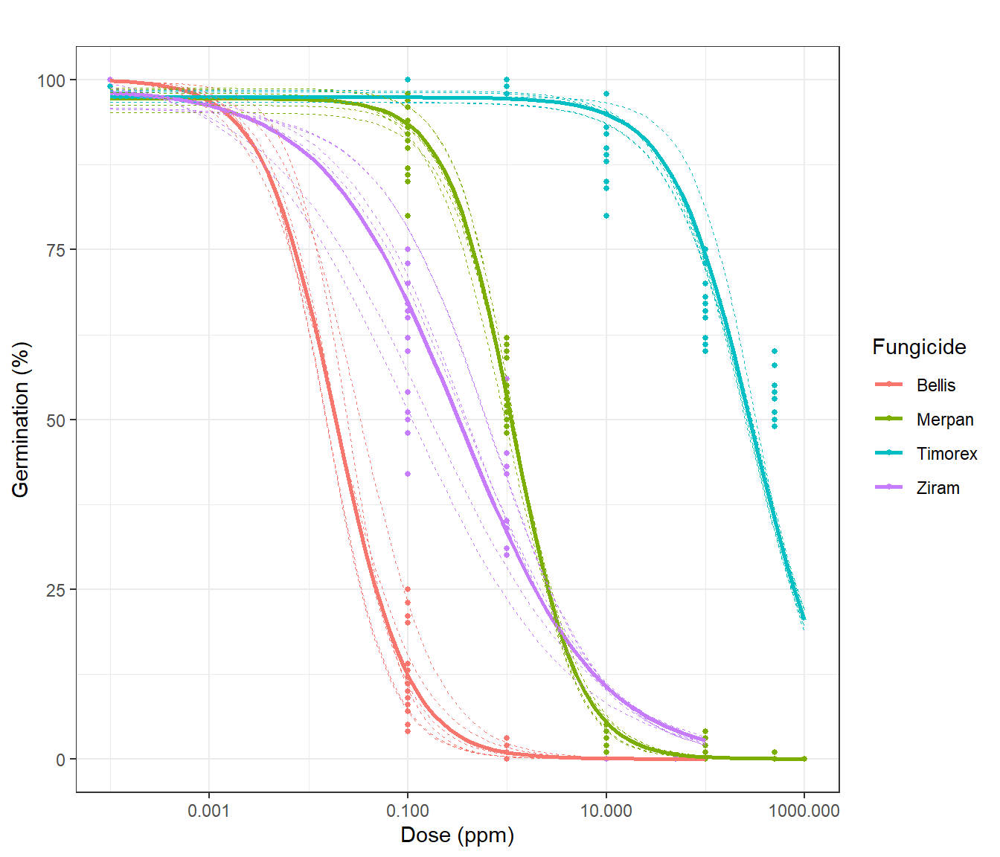

raw <- import("data/mycelial_growth.csv", dec=",")
dat <- raw %>%
mutate_at(vars(dose, colony_diameter), as.numeric) %>%
mutate_at(vars(fungicide, strain, experiment, plate), as.factor) %>%
mutate(curve_id = interaction(fungicide:strain:experiment)) 1 In vitro experiments
1.1 Mycelial growth
Data structure
ftable(xtabs(~ fungicide + strain + experiment + dose, dat)) dose 0 0.01 0.1 0.5 1 10 50 100 500 1000
fungicide strain experiment
Bellis S20 1 3 3 3 0 3 3 3 3 0 0
2 3 3 3 0 3 3 3 3 0 0
3 3 3 3 0 3 3 3 3 0 0
S23 1 3 3 3 0 3 3 3 3 0 0
2 3 3 3 0 3 3 3 3 0 0
3 3 3 3 0 3 3 3 3 0 0
S8 1 3 3 3 0 3 3 3 3 0 0
2 3 3 3 0 3 3 3 3 0 0
3 3 3 3 0 3 3 3 3 0 0
Merpan S20 1 3 0 3 0 3 3 0 3 3 3
2 3 0 3 0 3 3 0 3 3 3
3 3 0 3 0 3 3 0 3 3 3
S23 1 3 0 3 0 3 3 0 3 3 3
2 3 0 3 0 3 3 0 3 3 3
3 3 0 3 0 3 3 0 3 3 3
S8 1 3 0 3 0 3 3 0 3 3 3
2 3 0 3 0 3 3 0 3 3 3
3 3 0 3 0 3 3 0 3 3 3
Timorex S20 1 3 0 3 0 3 3 0 3 3 3
2 3 0 3 0 3 3 0 3 3 3
3 3 0 3 0 3 3 0 3 3 3
S23 1 3 0 3 0 3 3 0 3 3 3
2 3 0 3 0 3 3 0 3 3 3
3 3 0 3 0 3 3 0 3 3 3
S8 1 3 0 3 0 3 3 0 3 3 3
2 3 0 3 0 3 3 0 3 3 3
3 3 0 3 0 3 3 0 3 3 3
Ziram S20 1 3 0 3 3 3 3 3 3 0 0
2 3 0 3 3 3 3 3 3 0 0
3 3 0 3 3 3 3 3 3 0 0
S23 1 3 0 3 3 3 3 3 3 0 0
2 3 0 3 3 3 3 3 3 0 0
3 3 0 3 3 3 3 3 3 0 0
S8 1 3 0 3 3 3 3 3 3 0 0
2 3 0 3 3 3 3 3 3 0 0
3 3 0 3 3 3 3 3 3 0 0str(dat)'data.frame': 756 obs. of 7 variables:
$ fungicide : Factor w/ 4 levels "Bellis","Merpan",..: 1 1 1 1 1 1 1 1 1 1 ...
$ strain : Factor w/ 3 levels "S20","S23","S8": 2 2 2 1 1 1 3 3 3 2 ...
$ experiment : Factor w/ 3 levels "1","2","3": 1 1 1 1 1 1 1 1 1 1 ...
$ dose : num 0 0 0 0 0 0 0 0 0 100 ...
$ plate : Factor w/ 3 levels "1","2","3": 1 2 3 1 2 3 1 2 3 1 ...
$ colony_diameter: num 53 55 56 52 53 52 51 51 52 0 ...
$ curve_id : Factor w/ 36 levels "Bellis:S20:1",..: 4 4 4 1 1 1 7 7 7 4 ...Dose-response curves fitting by meta-analysis approach
# verify drc_per_strain.R
mod_mg <- metadrm(colony_diameter ~ dose,
data=dat,
fct=LL.3(),
ind=curve_id,
cid2=fungicide,
struct="UN")
save(mod_mg, file= "models/invitro_mg.rds")load("models/invitro_mg.rds")
summary(mod_mg)
Two-stage meta-analysis dose-response model
Model fitted: Log-logistic (ED50 as parameter) with lower limit at 0
Call:
metadrm(formula = colony_diameter ~ dose, fct = LL.3(), ind = curve_id,
data = dat, cid2 = fungicide, struct = "UN")
Variance estimates:
estim sqrt
tau^2.1 0.0023 0.0481
tau^2.2 8.1930 2.8623
tau^2.3 0.0001 0.0076
rho.b:(I rho.d:(I rho.e:(I
b:(Intercept) 1 -0.0949 0.9136
d:(Intercept) -0.0949 1 -0.4915
e:(Intercept) 0.9136 -0.4915 1
Coefficients:
Estimate Std.Err t value Pr(>|t|)
b:Bellis 0.5795367 0.0182490 31.7572 < 0.00000000000000022 ***
b:Merpan 0.3611793 0.0183369 19.6968 < 0.00000000000000022 ***
b:Timorex 0.3490411 0.0324495 10.7565 < 0.00000000000000022 ***
b:Ziram 0.3926960 0.0202379 19.4040 < 0.00000000000000022 ***
d:Bellis 51.3746461 0.9890286 51.9446 < 0.00000000000000022 ***
d:Merpan 52.5139150 1.0667613 49.2274 < 0.00000000000000022 ***
d:Timorex 49.9869522 1.3972223 35.7759 < 0.00000000000000022 ***
d:Ziram 53.0642566 1.1218557 47.3004 < 0.00000000000000022 ***
e:Bellis 0.0297542 0.0027299 10.8994 < 0.00000000000000022 ***
e:Merpan 24.5154698 1.6200305 15.1327 < 0.00000000000000022 ***
e:Timorex 112.8372474 22.1680049 5.0901 0.000001779 ***
e:Ziram 6.4555590 0.6162007 10.4764 < 0.00000000000000022 ***
---
Signif. codes: 0 '***' 0.001 '**' 0.01 '*' 0.05 '.' 0.1 ' ' 1EC50 Estimates
ec50s <- ED(mod_mg, respLev=c(50)) %>% data.frame
Estimated effective doses
Estimate Std. Error
e:Bellis:50 0.0297542 0.0027299
e:Merpan:50 24.5154698 1.6200305
e:Timorex:50 112.8372474 22.1680049
e:Ziram:50 6.4555590 0.6162007# coef_mod_mg <- summary(mod_mg) %>% data.frame %>%
# rownames_to_column("param") %>%
# separate(param, c("param", "fungicide"))
# ec50s <- coef_mod_mg %>% filter(param=="e")
# ec50sComparing fungicides EC50
As we compare EC50 ratios between fungicides, if the confidence interval does not contain 1, fungicides differ among them:
ed_comp <- EDcomp(mod_mg,
percVec=c(50),
percMat=rbind(c(1,1,1,1)),
interval="fieller") %>%
data.frame %>%
rownames_to_column("comp") %>%
rowwise() %>%
mutate(relative_to_one = f(Lower, Upper, 1)) # %>%
Estimated ratios of effect doses
Estimate Lower Upper
Bellis/Merpan:50/50 0.00121369 0.00095935 0.00151054
Bellis/Timorex:50/50 0.00026369 0.00017897 0.00044300
Bellis/Ziram:50/50 0.00460909 0.00353519 0.00602624
Merpan/Timorex:50/50 0.21726398 0.15162515 0.36083619
Merpan/Ziram:50/50 3.79757505 3.03655193 4.84141476
Timorex/Ziram:50/50 17.47908235 10.38447082 25.87541262 # as_huxtable() %>%
# set_number_format(1)
ed_comp# A tibble: 6 × 5
# Rowwise:
comp Estimate Lower Upper relative_to_one
<chr> <dbl> <dbl> <dbl> <chr>
1 Bellis/Merpan:50/50 0.00121 0.000959 0.00151 below
2 Bellis/Timorex:50/50 0.000264 0.000179 0.000443 below
3 Bellis/Ziram:50/50 0.00461 0.00354 0.00603 below
4 Merpan/Timorex:50/50 0.217 0.152 0.361 below
5 Merpan/Ziram:50/50 3.80 3.04 4.84 above
6 Timorex/Ziram:50/50 17.5 10.4 25.9 above ed_comp %>%
ggplot()+
aes(x=comp, y=Estimate) +
geom_pointrange(aes(ymin = Lower, ymax = Upper, col=relative_to_one))+
geom_hline(yintercept = 1, linetype=2)+
# scale_y_log10()+
coord_flip() +
labs(col="Relative to 1")dat %>%
ggplot()+
aes(x=dose+0.0001, y=colony_diameter, col=fungicide) +
geom_point(size=.5) +
geom_smooth(method = drm,
method.args = list(fct = L.3()), se = F) +
geom_smooth(aes(group=curve_id), size=.3, linetype=2,
method = drm,
method.args = list(fct = L.3()), se = F) +
labs(title= "", x = "Dose (ppm)", y = "Colony diameter (cm)", col= "Fungicide") +
scale_x_log10() +
theme_bw(base_family=12)
ggsave(last_plot(), file="plots/mg_curves.jpg", width = 8, height = 6, units = "cm", scale=1.5, dpi = 300)1.2 Spore germination
germi_raw <- import("data/germination.csv", dec=",")
germi_dat <- germi_raw %>%
mutate_at(vars(dose), as.numeric) %>%
mutate_at(vars(fungicide, strain, repetition, replicate), as.factor) %>%
mutate(curve_id = interaction(fungicide:strain:repetition)) %>%
mutate(dose_ = dose+0.0001)Data structure
ftable(xtabs(complete.cases(germination_percent)~fungicide+dose+strain , data=germi_dat)) strain S20 S23 S8
fungicide dose
Bellis 0 6 6 6
0.1 6 6 6
1 6 6 6
10 6 6 6
50 6 6 6
100 6 6 6
500 0 0 0
1000 0 0 0
Merpan 0 6 6 6
0.1 6 6 6
1 6 6 6
10 6 6 6
50 0 0 0
100 6 6 6
500 6 6 6
1000 6 6 6
Timorex 0 6 6 6
0.1 6 6 6
1 6 6 6
10 6 6 6
50 0 0 0
100 6 6 6
500 6 6 6
1000 6 6 6
Ziram 0 6 6 6
0.1 6 6 6
1 6 6 6
10 6 6 6
50 6 6 6
100 6 6 6
500 0 0 0
1000 0 0 0str(germi_dat)'data.frame': 468 obs. of 12 variables:
$ fungicide : Factor w/ 4 levels "Bellis","Merpan",..: 1 1 1 1 1 1 1 1 1 1 ...
$ strain : Factor w/ 3 levels "S20","S23","S8": 2 2 2 1 1 1 3 3 3 2 ...
$ repetition : Factor w/ 2 levels "1","2": 1 1 1 1 1 1 1 1 1 1 ...
$ replicate : Factor w/ 3 levels "1","2","3": 1 2 3 1 2 3 1 2 3 1 ...
$ dose : num 100 100 100 100 100 100 100 100 100 50 ...
$ germinated_conidia : int 0 0 0 0 0 0 0 0 0 0 ...
$ total_conida : int 100 100 100 100 100 100 100 100 100 100 ...
$ non_germinated_conidia: int 100 100 100 100 100 100 100 100 100 100 ...
$ inhibition_perc : int 100 100 100 100 100 100 100 100 100 100 ...
$ germination_percent : int 0 0 0 0 0 0 0 0 0 0 ...
$ curve_id : Factor w/ 24 levels "Bellis:S20:1",..: 3 3 3 1 1 1 5 5 5 3 ...
$ dose_ : num 100 100 100 100 100 ...Dose-response curves fitting by meta-analysis approach
mod_germ <- metadrm(germination_percent ~ dose_,
data=germi_dat,
fct=LL.3(),
ind=curve_id,
cid2=fungicide,
struct="UN")
save(mod_germ, file= "models/invitro_germ.rds")load("models/invitro_germ.rds")
summary(mod_germ)
Two-stage meta-analysis dose-response model
Model fitted: Log-logistic (ED50 as parameter) with lower limit at 0
Call:
metadrm(formula = germination_percent ~ dose_, fct = LL.3(),
ind = curve_id, data = germi_dat, cid2 = fungicide, struct = "UN")
Variance estimates:
estim sqrt
tau^2.1 0.0024 0.0494
tau^2.2 0.0063 0.0792
tau^2.3 0.0001 0.0090
rho.b:(I rho.d:(I rho.e:(I
b:(Intercept) 1 1.0000 1.0000
d:(Intercept) 1.0000 1 1.0000
e:(Intercept) 1.0000 1.0000 1
Coefficients:
Estimate Std.Err t value Pr(>|t|)
b:Bellis 1.0898626 0.0854167 12.7594 < 0.00000000000000022 ***
b:Merpan 1.3070417 0.0560275 23.3286 < 0.00000000000000022 ***
b:Timorex 1.0749724 0.1249763 8.6014 0.000000000004650 ***
b:Ziram 0.6145974 0.0415450 14.7935 < 0.00000000000000022 ***
d:Bellis 99.8992681 0.2360299 423.2484 < 0.00000000000000022 ***
d:Merpan 97.9883814 0.5305522 184.6913 < 0.00000000000000022 ***
d:Timorex 97.6597656 1.7236343 56.6592 < 0.00000000000000022 ***
d:Ziram 99.0543330 2.0387322 48.5862 < 0.00000000000000022 ***
e:Bellis 0.0231700 0.0051014 4.5419 0.000027438625743 ***
e:Merpan 1.1355696 0.0241592 47.0036 < 0.00000000000000022 ***
e:Timorex 289.0283519 34.0651922 8.4846 0.000000000007338 ***
e:Ziram 0.1557700 0.0270433 5.7600 0.000000308016186 ***
---
Signif. codes: 0 '***' 0.001 '**' 0.01 '*' 0.05 '.' 0.1 ' ' 1EC50´s Estimates
ec50s_g <- ED(mod_germ, respLev=c(50)) %>% as.data.frame()
Estimated effective doses
Estimate Std. Error
e:Bellis:50 0.0231700 0.0051014
e:Merpan:50 1.1355696 0.0241592
e:Timorex:50 289.0283519 34.0651922
e:Ziram:50 0.1557700 0.0270433ec50s_g Estimate Std. Error
e:Bellis:50 0.02317004 0.005101351
e:Merpan:50 1.13556964 0.024159210
e:Timorex:50 289.02835194 34.065192159
e:Ziram:50 0.15577000 0.027043327germ_comp <- EDcomp(mod_germ,
percVec=c(50),
percMat=rbind(c(1,1,1,1)),
interval="fieller") %>%
data.frame %>%
rownames_to_column("comp") %>%
rowwise() %>%
mutate(relative_to_one = f(Lower, Upper, 1))
Estimated ratios of effect doses
Estimate Lower Upper
Bellis/Merpan:50/50 0.020403889 0.011404798 0.029477018
Bellis/Timorex:50/50 0.000080165 0.000043407 0.000126360
Bellis/Ziram:50/50 0.148745178 0.077874246 0.260413050
Merpan/Timorex:50/50 0.003928921 0.003164387 0.005155910
Merpan/Ziram:50/50 7.290040642 5.392013944 11.187536191
Timorex/Ziram:50/50 1855.481470394 1241.326870777 2978.546457196germ_comp# A tibble: 6 × 5
# Rowwise:
comp Estimate Lower Upper relative_to_one
<chr> <dbl> <dbl> <dbl> <chr>
1 Bellis/Merpan:50/50 0.0204 0.0114 0.0295 below
2 Bellis/Timorex:50/50 0.0000802 0.0000434 0.000126 below
3 Bellis/Ziram:50/50 0.149 0.0779 0.260 below
4 Merpan/Timorex:50/50 0.00393 0.00316 0.00516 below
5 Merpan/Ziram:50/50 7.29 5.39 11.2 above
6 Timorex/Ziram:50/50 1855. 1241. 2979. above coef_mod_germ <- summary(mod_germ) %>% data.frame %>%
rownames_to_column("param") %>%
separate(param, c("param", "fungicide"))
Two-stage meta-analysis dose-response model
Model fitted: Log-logistic (ED50 as parameter) with lower limit at 0
Call:
metadrm(formula = germination_percent ~ dose_, fct = LL.3(),
ind = curve_id, data = germi_dat, cid2 = fungicide, struct = "UN")
Variance estimates:
estim sqrt
tau^2.1 0.0024 0.0494
tau^2.2 0.0063 0.0792
tau^2.3 0.0001 0.0090
rho.b:(I rho.d:(I rho.e:(I
b:(Intercept) 1 1.0000 1.0000
d:(Intercept) 1.0000 1 1.0000
e:(Intercept) 1.0000 1.0000 1
Coefficients:
Estimate Std.Err t value Pr(>|t|)
b:Bellis 1.0898626 0.0854167 12.7594 < 0.00000000000000022 ***
b:Merpan 1.3070417 0.0560275 23.3286 < 0.00000000000000022 ***
b:Timorex 1.0749724 0.1249763 8.6014 0.000000000004650 ***
b:Ziram 0.6145974 0.0415450 14.7935 < 0.00000000000000022 ***
d:Bellis 99.8992681 0.2360299 423.2484 < 0.00000000000000022 ***
d:Merpan 97.9883814 0.5305522 184.6913 < 0.00000000000000022 ***
d:Timorex 97.6597656 1.7236343 56.6592 < 0.00000000000000022 ***
d:Ziram 99.0543330 2.0387322 48.5862 < 0.00000000000000022 ***
e:Bellis 0.0231700 0.0051014 4.5419 0.000027438625743 ***
e:Merpan 1.1355696 0.0241592 47.0036 < 0.00000000000000022 ***
e:Timorex 289.0283519 34.0651922 8.4846 0.000000000007338 ***
e:Ziram 0.1557700 0.0270433 5.7600 0.000000308016186 ***
---
Signif. codes: 0 '***' 0.001 '**' 0.01 '*' 0.05 '.' 0.1 ' ' 1# ec50_germ <- coef_mod_germ %>% filter(param=="e")
# ec50_germgerm_comp %>%
ggplot()+
aes(x=comp, y=Estimate) +
geom_pointrange(aes(ymin = Lower, ymax = Upper, col=relative_to_one))+
geom_hline(yintercept = 1, linetype=2)+
coord_flip() +
labs(col="Relative to 1")germi_dat %>%
ggplot()+
aes(x=dose+0.0001, y=germination_percent, col=fungicide) +
scale_x_log10() +
geom_point(size=1) +
geom_smooth(method = drm,
method.args = list(fct = L.3()), se = F) +
geom_smooth(aes(group=curve_id), size=.3, linetype=2,
method = drm,
method.args = list(fct = L.3()), se = F) +
labs(title= "", x = "Dose (ppm)", y = "Germination (%)", col= "Fungicide") +
theme_bw(base_family=12)
ggsave(last_plot(), file="plots/germi_curves.jpg", width = 8, height = 6, units = "cm", scale=1.5, dpi = 300)